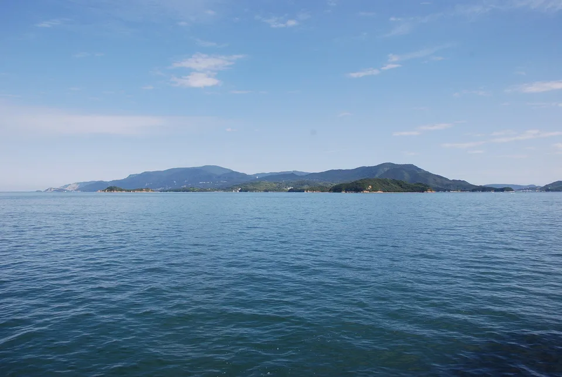
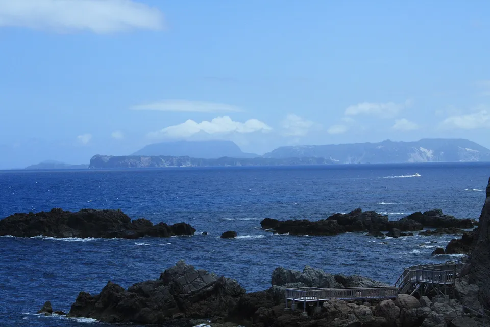
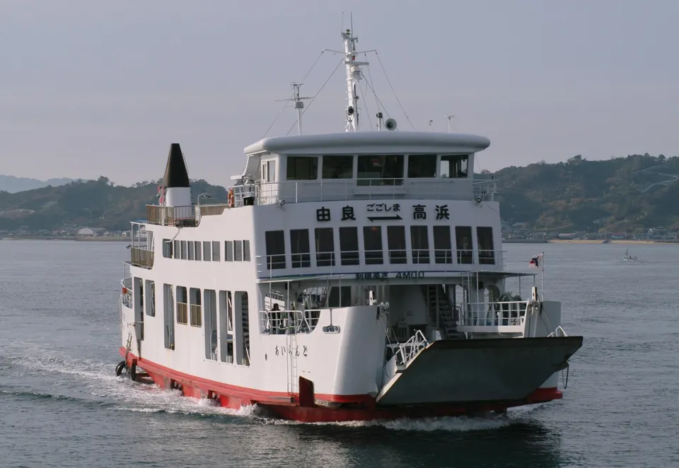
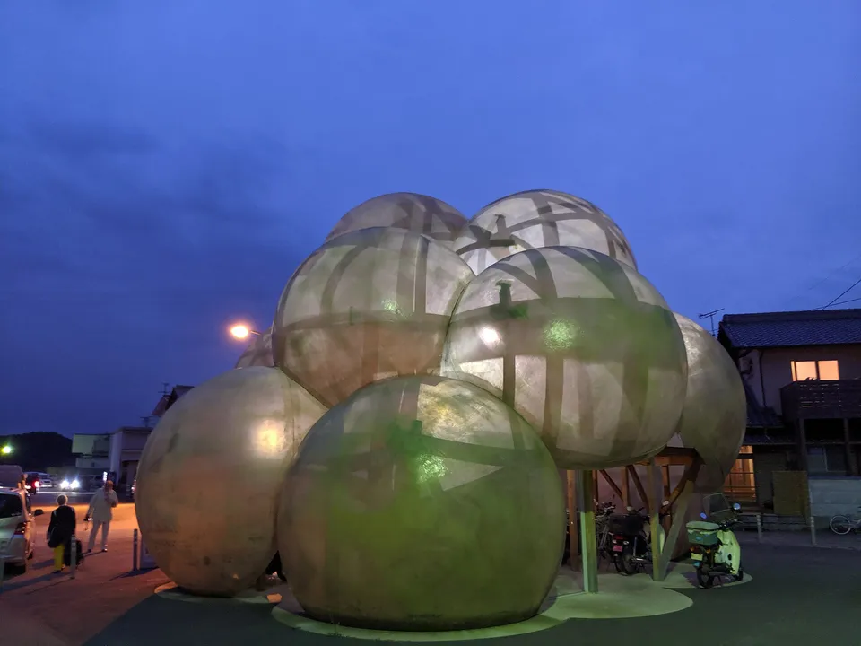
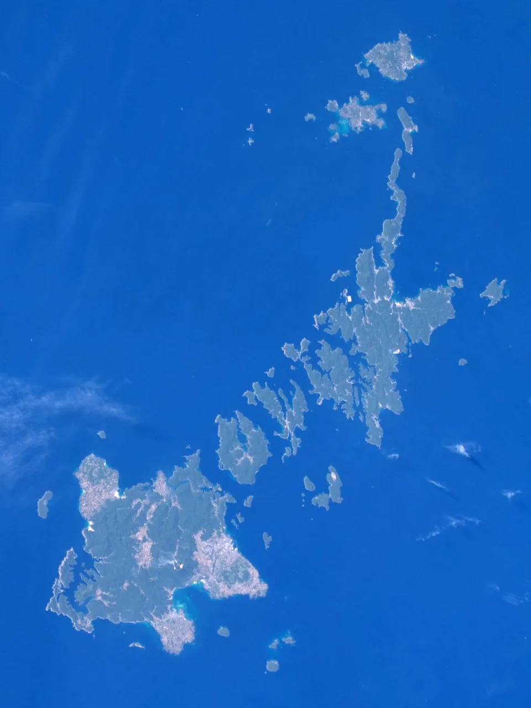
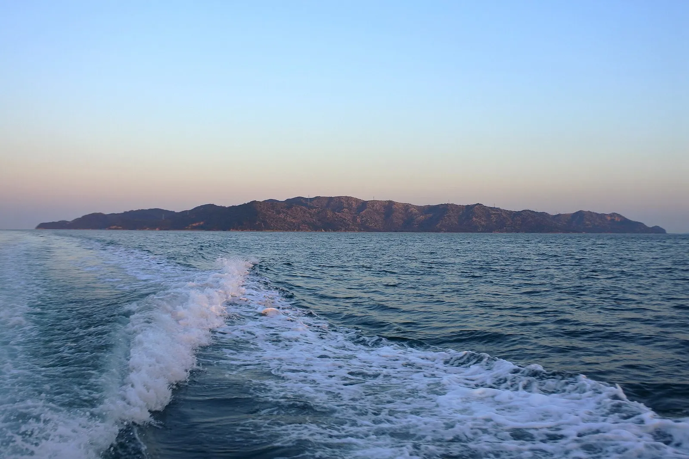

{kind=link}
Japan has over 14,000 islands. A few hundred have people living on them — a ferry, a school, one shop, a harbour. This is all 353 of them in one sortable table, with the population and the area beside each name.
The roster comes from SHIMADAS, the island reference the Japan Islands Center publishes and Japanese island travellers actually use. It has never been translated. We kept only its published figures, matched each island to its Japanese Wikipedia article to get the reading and the English article where one exists, and linked every island to its prefecture guide.



Photos: Islands of the Seto Inland Sea from the ferry deck — Maarten Heerlien from Voorschoten, The Netherlands via Wikimedia Commons, CC BY 2.0 · Aogashima, Tokyo — a village of about 170 people inside a volcanic caldera — Soica2001 ( talk ) via Wikimedia Commons, Public domain · Shikinejima in the Izu Islands, seen from the shore — Y.Kowashi via Wikimedia Commons, CC BY 3.0
.jpg){kind=link}
{kind=link}
{kind=link}
Where this list comes from

Japan counts over 14,000 islands. Only a few hundred have people living on them, and that list is the useful one: an island with residents has a boat, somewhere to stay or at least somewhere to eat, and a reason to exist that is not just a rock with a name.
The roster here is the inhabited-island list from SHIMADAS (シマダス), the reference the Japan Islands Center publishes — the book Japanese island travellers actually use, and one that has never been translated. There is no equivalent in English: the English Wikipedia's list of Japanese islands gives names and little else, and every "hidden islands of Japan" article is one writer's shortlist of the same dozen places.
So this is the plain thing nobody has put online in English — all 353 inhabited islands, with the population and area printed beside each one, sortable, with the prefecture guide and, where one exists, the English Wikipedia article one click away.
The shape of it
Source: SHIMADAS (Japan Islands Center, 2019 edition); its figures come from the 2015 national census and Geospatial Information Authority mapping.
The table: all 353 inhabited islands
Sort by population or size, filter by region, or type a name. "Read more" links to the English Wikipedia article where we could verify one; a blank means we could not match it confidently, not that none exists.
| Island | Prefecture | People ▾ | km² ▾ | Read more |
|---|---|---|---|---|
| Rishiri Island利尻島 | HokkaidoHokkaido | 5,090 | 182 | Wikipedia |
| Rebun Island礼文島 | HokkaidoHokkaido | 2,773 | 82 | Wikipedia |
| Okushiri Island奥尻島 | HokkaidoHokkaido | 2,690 | 143 | Wikipedia |
| Teuri Island天売島 | HokkaidoHokkaido | 313 | 5.47 | Wikipedia |
| Yagishiri Island焼尻島 | HokkaidoHokkaido | 201 | 5.19 | Wikipedia |
| Kojima小島 | HokkaidoHokkaido | 12 | 0.05 | Wikipedia |
| Murotsujima室津島 | HokkaidoHokkaido | 8 | 0.30 | |
| Ōshima大島 | MiyagiTohoku | 2,522 | 8.50 | |
| Miyatojima宮戸島 | MiyagiTohoku | 536 | 7.39 | |
| Tobishima飛島 | YamagataTohoku | 204 | 2.75 | Wikipedia |
| Katsurashima桂島 | MiyagiTohoku | 160 | 0.67 | |
| Sabusawajima寒風沢島 | MiyagiTohoku | 96 | 1.21 | |
| Izushima出島 | MiyagiTohoku | 77 | 2.63 | |
| Nonoshima野々島 | MiyagiTohoku | 66 | 0.44 | |
| Tashirojima田代島 | MiyagiTohoku | 62 | 2.92 | Wikipedia |
| Enoshima江島 | MiyagiTohoku | 38 | 0.36 | |
| Kinkasan金華山 | MiyagiTohoku | 15 | 10 | Wikipedia |
| Hōjima朴島 | MiyagiTohoku | 12 | 0.34 | |
| Izu Ōshima大島 | TokyoKanto | 7,884 | 91 | Wikipedia |
| Hachijō-jima八丈島 | TokyoKanto | 7,613 | 69 | Wikipedia |
| Miyake-jima三宅島 | TokyoKanto | 2,482 | 55 | Wikipedia |
| Nii-jima新島 | TokyoKanto | 2,230 | 23 | Wikipedia |
| Chichijima父島 | TokyoKanto | 2,156 | 23 | Wikipedia |
| Kōzu-shima神津島 | TokyoKanto | 1,891 | 18 | Wikipedia |
| Jōgashima城ケ島 | KanagawaKanto | 484 | 0.99 | Wikipedia |
| Hahajima母島 | TokyoKanto | 461 | 20 | Wikipedia |
| Iwo Jima硫黄島 | TokyoKanto | 401 | 24 | Wikipedia |
| Enoshima江の島 | KanagawaKanto | 368 | 0.38 | Wikipedia |
| Toshima利島 | TokyoKanto | 337 | 4.12 | Wikipedia |
| Mikura-jima御蔵島 | TokyoKanto | 335 | 21 | Wikipedia |
| Aogashima百ケ島 | TokyoKanto | 178 | 5.96 | Wikipedia |
| Minamitorishima南鳥島 | TokyoKanto | 71 | 1.52 | Wikipedia |
| Sado Island佐渡島 | NiigataChubu | 57,255 | 856 | Wikipedia |
| Notojima能登島 | IshikawaChubu | 2,725 | 47 | Wikipedia |
| Shinojima篠島 | AichiChubu | 1,653 | 0.94 | Wikipedia |
| Awashima Island粟島 | NiigataChubu | 370 | 9.78 | Wikipedia |
| Hatsushima初島 | ShizuokaChubu | 333 | 0.44 | Wikipedia |
| Sakushima佐久島 | AichiChubu | 234 | 1.73 | |
| Hegurajima舳倉島 | IshikawaChubu | 105 | 0.55 | Wikipedia |
| Awaji Island淡路島 | HyogoKansai | 134,717 | 593 | Wikipedia |
| Ieshima家島 | HyogoKansai | 2,693 | 5.40 | |
| Bōzejima坊勢島 | HyogoKansai | 2,165 | 1.87 | |
| Tōshijima答志島 | MieKansai | 1,975 | 6.96 | Wikipedia |
| Kii Ōshima紀伊大島 | WakayamaKansai | 1,123 | 9.47 | Wikipedia |
| Sugashima菅島 | MieKansai | 550 | 4.41 | Wikipedia |
| Nushima沼島 | HyogoKansai | 430 | 2.73 | |
| Kami-shima神島 | MieKansai | 348 | 0.76 | Wikipedia |
| Sakatejima坂手島 | MieKansai | 315 | 0.51 | Wikipedia |
| Okishima沖島 | ShigaKansai | 287 | 1.51 | Wikipedia |
| Watakanojima渡鹿野島 | MieKansai | 219 | 0.69 | |
| Kashiko Island賢島 | MieKansai | 107 | 66 | Wikipedia |
| Tangashima男鹿島 | HyogoKansai | 38 | 4.53 | |
| Mukaishima向島 | HiroshimaChugoku | 22,311 | 22 | Wikipedia |
| Kurahashi-jima倉橋島 | HiroshimaChugoku | 16,776 | 70 | Wikipedia |
| Yashirojima屋代島 | YamaguchiChugoku | 16,766 | 128 | |
| Dōgojima島後 | ShimaneChugoku | 14,608 | 243 | Wikipedia |
| Ikuchijima生口島 | HiroshimaChugoku | 8,902 | 31 | Wikipedia |
| Ōsakikamijima大崎上島 | HiroshimaChugoku | 7,915 | 38 | Wikipedia |
| Daikon Island大根島 | ShimaneChugoku | 3,241 | 6.74 | Wikipedia |
| Nishinoshima西ノ島 | ShimaneChugoku | 3,027 | 56 | Wikipedia |
| Nakanoshima中ノ島 | ShimaneChugoku | 2,400 | 33 | Wikipedia |
| Ōmijima青海島 | YamaguchiChugoku | 1,806 | 15 | Wikipedia |
| Itsukushima厳島 | HiroshimaChugoku | 1,674 | 30 | Wikipedia |
| Nagashima長島 | YamaguchiChugoku | 1,489 | 14 | |
| Tashima田島 | HiroshimaChugoku | 1,480 | 8.62 | |
| Shimokamagarijima下蒲刈島 | HiroshimaChugoku | 1,463 | 7.96 | |
| Toyoshima豊島 | HiroshimaChugoku | 1,179 | 5.64 | |
| Kasadoshima笠戸島 | YamaguchiChugoku | 1,109 | 12 | |
| Yokoshima横島 | HiroshimaChugoku | 1,063 | 4.06 | |
| Mishima Island見島 | YamaguchiChugoku | 864 | 7.73 | Wikipedia |
| Ninoshima似島 | HiroshimaChugoku | 790 | 3.84 | Wikipedia |
| Kitagishima北木島 | OkayamaChugoku | 772 | 7.48 | |
| Tsunoshima角島 | YamaguchiChugoku | 726 | 3.96 | Wikipedia |
| Sagishima佐木島 | HiroshimaChugoku | 681 | 8.71 | |
| Hitsushima櫃島 | YamaguchiChugoku | 677 | 3.00 | |
| Chiburijima知夫里島 | ShimaneChugoku | 615 | 14 | Wikipedia |
| Iwashijima岩子島 | HiroshimaChugoku | 566 | 2.45 | |
| Nagashima長島 | OkayamaChugoku | 486 | 3.52 | Wikipedia |
| Kōneshima高根島 | HiroshimaChugoku | 481 | 5.60 | |
| Momoshima百島 | HiroshimaChugoku | 477 | 3.08 | |
| Shiraishi Island白石島 | OkayamaChugoku | 450 | 2.95 | Wikipedia |
| Hashirijima走島 | HiroshimaChugoku | 410 | 2.16 | |
| Iwai Island祝島 | YamaguchiChugoku | 380 | 7.68 | Wikipedia |
| Heiguntō平郡島 | YamaguchiChugoku | 348 | 17 | |
| Kashirajima頭島 | OkayamaChugoku | 319 | 0.60 | |
| Sukumojima粭島 | YamaguchiChugoku | 269 | 3.33 | |
| Kashima鹿島 | HiroshimaChugoku | 258 | 2.62 | |
| Ōzushima大津島 | YamaguchiChugoku | 244 | 4.77 | Wikipedia |
| Manabeshima真鍋島 | OkayamaChugoku | 201 | 1.49 | Wikipedia |
| Hashira Island柱島 | YamaguchiChugoku | 145 | 3.12 | Wikipedia |
| Maejima前島 | OkayamaChugoku | 140 | 2.42 | |
| Okikamurojima沖家室島 | YamaguchiChugoku | 137 | 0.95 | |
| Noshima野島 | YamaguchiChugoku | 94 | 0.73 | |
| Futaoijima蓋井島 | YamaguchiChugoku | 90 | 2.32 | |
| Mutsure Island六連島 | YamaguchiChugoku | 87 | 0.69 | Wikipedia |
| Kanawajima金輪島 | HiroshimaChugoku | 81 | 1.05 | |
| Ishima石島（井島） | OkayamaChugoku | 76 | 0.82 | |
| Tebajima出羽島 | YamaguchiChugoku | 72 | 0.65 | |
| Ōtabujima大多府島 | OkayamaChugoku | 71 | 0.40 | |
| Takashima高島 | OkayamaChugoku | 70 | 1.05 | |
| Mushima六島 | OkayamaChugoku | 70 | 1.02 | |
| Nasakejima情島 | YamaguchiChugoku | 62 | 1.00 | |
| Kohosojima小細島 | HiroshimaChugoku | 47 | 0.76 | |
| Ushima牛島 | YamaguchiChugoku | 46 | 1.90 | |
| Ōbishima大飛島 | OkayamaChugoku | 45 | 0.96 | |
| Inujima犬島 | OkayamaChugoku | 44 | 0.54 | Wikipedia |
| Kōjima鴻島 | OkayamaChugoku | 39 | 2.07 | |
| Chigirishima契島 | HiroshimaChugoku | 32 | 0.09 | |
| Nagashima長島 | HiroshimaChugoku | 28 | 1.04 | |
| Umashima馬島 | YamaguchiChugoku | 26 | 0.70 | |
| Yashima八島 | YamaguchiChugoku | 25 | 4.16 | |
| Kuroshima黒島 | YamaguchiChugoku | 24 | 0.54 | |
| Mikadoshima三角島 | HiroshimaChugoku | 23 | 0.78 | |
| Hashima端島 | YamaguchiChugoku | 21 | 0.67 | Wikipedia |
| Chigirijima生野島 | HiroshimaChugoku | 17 | 2.25 | |
| Sagōjima佐合島 | YamaguchiChugoku | 17 | 1.32 | |
| Ōkunoshima大久野島 | HiroshimaChugoku | 15 | 0.70 | Wikipedia |
| Kakuijima鹿久居島 | OkayamaChugoku | 9 | 10 | |
| Okinoshima沖野島 | HiroshimaChugoku | 9 | 0.75 | |
| Muguchijima六□島 | OkayamaChugoku | 7 | 1.09 | |
| Maejima前島 | YamaguchiChugoku | 7 | 1.09 | |
| Sagishima小佐木島 | HiroshimaChugoku | 6 | 0.50 | |
| Matsushima松島 | OkayamaChugoku | 3 | 0.08 | |
| Shōdoshima小豆島 | KagawaShikoku | 27,927 | 153 | Wikipedia |
| Ōmishima Island大三島 | EhimeShikoku | 5,675 | 65 | Wikipedia |
| Shimadajima島田島 | TokushimaShikoku | 4,459 | 2.59 | |
| Naoshima直島 | KagawaShikoku | 3,105 | 7.82 | Wikipedia |
| Nakajima中島 | EhimeShikoku | 2,781 | 21 | |
| Nii Ōshima大島 | EhimeShikoku | 2,504 | 42 | |
| Iwagijima岩城島 | EhimeShikoku | 2,033 | 8.95 | |
| Ikinajima生名島 | EhimeShikoku | 1,582 | 3.67 | |
| Gogoshima興居島 | EhimeShikoku | 1,118 | 8.40 | |
| Teshima豊島 | KagawaShikoku | 867 | 15 | Wikipedia |
| Kushima九島 | EhimeShikoku | 861 | 3.37 | |
| Sashima佐島 | EhimeShikoku | 489 | 2.68 | |
| Ōshima大島 | KochiShikoku | 488 | 0.05 | |
| Shimadajima島田島 | TokushimaShikoku | 430 | 5.72 | |
| Ibuki island伊吹島 | KagawaShikoku | 400 | 1.01 | Wikipedia |
| Honjima本島 | KagawaShikoku | 396 | 6.75 | |
| Kashiwajima柏島 | KochiShikoku | 385 | 0.57 | |
| Nuwajima怒和島 | EhimeShikoku | 354 | 4.75 | |
| Okamura Island岡村島 | EhimeShikoku | 311 | 3.17 | Wikipedia |
| Tojima戸島 | EhimeShikoku | 307 | 2.75 | |
| Tsuwajijima津和地島 | EhimeShikoku | 291 | 2.85 | |
| Hiburishima日振島 | EhimeShikoku | 289 | 3.74 | |
| Nii Ōshima大島 | EhimeShikoku | 244 | 0.75 | |
| Muzukijima睦月島 | EhimeShikoku | 222 | 3.81 | |
| Awashima Island粟島 | KagawaShikoku | 216 | 3.67 | Wikipedia |
| Takegashima竹ケ島 | TokushimaShikoku | 214 | 1.30 | |
| Nii Ōshima大島 | EhimeShikoku | 190 | 2.14 | |
| Uoshima魚島 | EhimeShikoku | 168 | 1.36 | Wikipedia |
| Ishima伊島 | TokushimaShikoku | 165 | 1.44 | |
| Okinoshima沖の島 | KochiShikoku | 149 | 10 | |
| Ogijima男木島 | KagawaShikoku | 148 | 1.34 | Wikipedia |
| Megijima女木島 | KagawaShikoku | 136 | 2.62 | Wikipedia |
| Futagamijima二神島 | EhimeShikoku | 127 | 2.13 | |
| Nogutsunajima野忽那島 | EhimeShikoku | 106 | 0.92 | |
| Yoshima与島 | KagawaShikoku | 81 | 1.10 | |
| Kashima嘉島 | EhimeShikoku | 80 | 0.30 | Wikipedia |
| Ōshima大島 | KagawaShikoku | 75 | 0.73 | Wikipedia |
| Iwakurojima岩黒島 | KagawaShikoku | 75 | 0.17 | |
| Sanagishima佐柳島 | KagawaShikoku | 72 | 1.83 | |
| Ōgeshima大下島 | EhimeShikoku | 69 | 1.75 | |
| Nakanoshima中ノ島 | KochiShikoku | 67 | 0.23 | |
| Okinoshima沖之島 | KagawaShikoku | 60 | 0.18 | |
| Tsurushima釣島 | EhimeShikoku | 37 | 0.36 | Wikipedia |
| Oteshima小手島 | KagawaShikoku | 36 | 0.53 | |
| Teshima手島 | KagawaShikoku | 30 | 3.41 | Wikipedia |
| Takamishima高見島 | KagawaShikoku | 27 | 2.33 | |
| Takaikamishima高井神島 | EhimeShikoku | 26 | 1.34 | Wikipedia |
| Ushima鵜島 | EhimeShikoku | 23 | 0.76 | |
| Ugurushima鵜来島 | KochiShikoku | 23 | 1.31 | |
| Umashima馬島 | EhimeShikoku | 20 | 0.50 | |
| Aijima安居島 | EhimeShikoku | 20 | 0.26 | |
| Shishijima志々島 | KagawaShikoku | 18 | 0.74 | Wikipedia |
| Mukaejima向島 | KagawaShikoku | 15 | 0.74 | |
| Kurushima来島 | EhimeShikoku | 15 | 0.04 | Wikipedia |
| Tsushima津島 | EhimeShikoku | 13 | 1.49 | Wikipedia |
| Oshima小島 | EhimeShikoku | 11 | 0.50 | Wikipedia |
| Odeshima小豊島 | KagawaShikoku | 10 | 1.10 | |
| Ushijima牛島 | KagawaShikoku | 10 | 0.84 | |
| Hikijima比岐島 | EhimeShikoku | 3 | 0.30 | |
| Koyoshima小与島 | KagawaShikoku | 2 | 0.26 | |
| Shimoshima Island天草下島 | KumamotoKyushu | 71,523 | 575 | Wikipedia |
| Amami Ōshima奄美大島 | KagoshimaKyushu | 59,828 | 712 | Wikipedia |
| Fukue Island福江島 | NagasakiKyushu | 34,419 | 326 | Wikipedia |
| Tsushima Island対馬島 | NagasakiKyushu | 31,301 | 696 | Wikipedia |
| Tanegashima種子島 | KagoshimaKyushu | 29,847 | 444 | Wikipedia |
| Iki Island壱岐島 | NagasakiKyushu | 26,750 | 135 | Wikipedia |
| Kamishima Island天草上島 | KumamotoKyushu | 26,317 | 226 | Wikipedia |
| Tokunoshima徳之島 | KagoshimaKyushu | 23,497 | 248 | Wikipedia |
| Nakadōri Island中通島 | NagasakiKyushu | 20,167 | 168 | Wikipedia |
| Shiroze白瀬 | NagasakiKyushu | 18,121 | 168 | |
| Hirado Island平戸島 | NagasakiKyushu | 17,876 | 163 | Wikipedia |
| Okinoerabujima沖永良部島 | KagoshimaKyushu | 12,996 | 94 | Wikipedia |
| Yakushima屋久島 | KagoshimaKyushu | 12,913 | 540 | Wikipedia |
| Ōyano-jima大矢野島 | KumamotoKyushu | 11,905 | 30 | Wikipedia |
| Nagashima Island長島 | KagoshimaKyushu | 9,067 | 91 | Wikipedia |
| Kikaijima喜界島 | KagoshimaKyushu | 7,212 | 57 | Wikipedia |
| Yoronjima与論島 | KagoshimaKyushu | 5,327 | 21 | Wikipedia |
| Ōshima大島 | NagasakiKyushu | 5,185 | 12 | |
| Fukushima福島 | NagasakiKyushu | 2,635 | 17 | Wikipedia |
| Shimokoshiki-shima下甑島 | KagoshimaKyushu | 2,321 | 66 | Wikipedia |
| Naru Island奈留島 | NagasakiKyushu | 2,246 | 24 | Wikipedia |
| Ojikajima小値賀島 | NagasakiKyushu | 2,229 | 12 | |
| Ukujima宇久島 | NagasakiKyushu | 2,179 | 25 | Wikipedia |
| Kamikoshiki-shima上甑島 | KagoshimaKyushu | 2,174 | 44 | Wikipedia |
| Takashima鷹島 | NagasakiKyushu | 2,037 | 16 | |
| Himeshima姫島 | OitaKyushu | 1,991 | 6.99 | |
| Goshōrajima御所浦島 | KumamotoKyushu | 1,786 | 13 | |
| Shika Island志賀島 | FukuokaKyushu | 1,639 | 5.82 | Wikipedia |
| Wakamatsu Island若松島 | NagasakiKyushu | 1,402 | 31 | Wikipedia |
| Kakeromajima加計呂麻島 | KagoshimaKyushu | 1,262 | 77 | Wikipedia |
| Iwajima維和島 | KumamotoKyushu | 1,236 | 6.55 | |
| Tobasejima戸馳島 | KumamotoKyushu | 1,224 | 6.95 | |
| Hinoshima樋島 | KumamotoKyushu | 1,140 | 3.45 | |
| Azuchiōshima的山大島 | NagasakiKyushu | 1,077 | 15 | |
| Kakinōrashima蛎浦島 | NagasakiKyushu | 927 | 4.75 | |
| Shimauratō島野浦島 | MiyazakiKyushu | 837 | 2.84 | |
| Makishima牧島 | NagasakiKyushu | 810 | 1.62 | |
| Nokonoshima能古島 | FukuokaKyushu | 717 | 3.95 | |
| Ōnyūjima大入島 | OitaKyushu | 712 | 5.65 | |
| Takushima度島 | NagasakiKyushu | 701 | 3.57 | |
| Hotojima保戸島 | OitaKyushu | 700 | 0.86 | |
| Shishijima獅子島 | KagoshimaKyushu | 689 | 17 | |
| Yokōrajima横浦島 | KumamotoKyushu | 627 | 1.14 | |
| Matsushima松島 | NagasakiKyushu | 534 | 6.37 | |
| Kabeshima加部島 | SagaKyushu | 533 | 2.72 | |
| Kabashima樺島 | NagasakiKyushu | 528 | 2.32 | Wikipedia |
| Tsūjishima通詞島 | KumamotoKyushu | 518 | 0.60 | |
| Genkai Island玄界島 | FukuokaKyushu | 458 | 1.16 | Wikipedia |
| Kuroshima黒島 | NagasakiKyushu | 446 | 4.66 | |
| Shōrajima諸浦島 | KagoshimaKyushu | 412 | 3.87 | |
| Ōshima大島 | NagasakiKyushu | 399 | 0.40 | |
| Takashima高島 | NagasakiKyushu | 382 | 1.23 | |
| Ogawashima小川島 | SagaKyushu | 348 | 0.92 | |
| Madarashima馬渡島 | SagaKyushu | 347 | 4.24 | |
| Makishima牧島 | KumamotoKyushu | 322 | 5.59 | |
| Kashiwajima神集島 | SagaKyushu | 321 | 1.39 | |
| Hisaka Island久賀島 | NagasakiKyushu | 294 | 37 | Wikipedia |
| Yushima湯島 | KumamotoKyushu | 293 | 0.52 | |
| Yushima湯島 | KumamotoKyushu | 274 | 0.32 | |
| Ainoshima相島 | FukuokaKyushu | 267 | 1.22 | Wikipedia |
| Ainoshima藍島 | FukuokaKyushu | 243 | 0.68 | Wikipedia |
| Takashima高島 | SagaKyushu | 241 | 0.62 | |
| Hiaijima樋合島 | KumamotoKyushu | 222 | 0.79 | |
| Tobishima小飛島 | NagasakiKyushu | 205 | 0.90 | |
| Terashima寺島 | NagasakiKyushu | 203 | 0.78 | |
| Sakitojima崎戸島 | NagasakiKyushu | 197 | 0.41 | |
| Oronoshima小呂島 | FukuokaKyushu | 192 | 0.43 | |
| Kuroshima黒島 | KagoshimaKyushu | 190 | 15 | Wikipedia |
| Takashima高島 | NagasakiKyushu | 181 | 2.67 | |
| Nakanoshima中之島 | KagoshimaKyushu | 171 | 34 | Wikipedia |
| Kuchinoerabu-jima口永良部島 | KagoshimaKyushu | 152 | 36 | Wikipedia |
| Nagaurajima永浦島 | KumamotoKyushu | 151 | 0.79 | |
| Jinoshima地島 | FukuokaKyushu | 148 | 1.62 | |
| Takarajima宝島 | KagoshimaKyushu | 148 | 7.07 | Wikipedia |
| Himeshima姫島 | FukuokaKyushu | 147 | 0.75 | |
| Maejima前島 | KumamotoKyushu | 140 | 0.43 | |
| Saganoshima嵯峨島 | NagasakiKyushu | 134 | 3.16 | |
| Kakarajima加唐島 | SagaKyushu | 131 | 2.83 | Wikipedia |
| Ikeshima池島 | NagasakiKyushu | 130 | 1.06 | Wikipedia |
| Iōjima硫黄島 | KagoshimaKyushu | 130 | 12 | Wikipedia |
| Kabashima椛島 | NagasakiKyushu | 129 | 8.68 | Wikipedia |
| Enoshima江島 | NagasakiKyushu | 124 | 2.59 | |
| Ōshima大島 | NagasakiKyushu | 123 | 1.17 | |
| Nagashima長島 | NagasakiKyushu | 116 | 0.51 | |
| Ōshima大島 | OitaKyushu | 114 | 1.63 | |
| Arifukujima有福島 | NagasakiKyushu | 112 | 2.97 | |
| Harushima原島 | NagasakiKyushu | 100 | 0.53 | |
| Akusekijima悪石島 | KagoshimaKyushu | 79 | 7.49 | Wikipedia |
| Suwanosejima諏訪之瀬島 | KagoshimaKyushu | 73 | 28 | Wikipedia |
| Tairajima平島 | KagoshimaKyushu | 71 | 2.08 | Wikipedia |
| Ōshima大島 | NagasakiKyushu | 65 | 0.71 | |
| Uni Island海栗島 | NagasakiKyushu | 64 | 0.09 | Wikipedia |
| Kuroshima黒島 | NagasakiKyushu | 63 | 0.82 | |
| Mukushima向島 | SagaKyushu | 56 | 0.30 | |
| Kodakarajima小宝島 | KagoshimaKyushu | 55 | 1.00 | Wikipedia |
| Madarajima斑島 | NagasakiKyushu | 54 | 0.24 | |
| Tobishima飛島 | NagasakiKyushu | 44 | 0.50 | |
| Ōshima黄島 | NagasakiKyushu | 41 | 1.39 | |
| Matsushima松島 | SagaKyushu | 40 | 0.63 | |
| Okinoshima沖ノ島 | NagasakiKyushu | 39 | 2.66 | |
| Hinoshima日島 | NagasakiKyushu | 38 | 1.39 | |
| Tsukumishima津久見島 | OitaKyushu | 35 | 0.29 | |
| Umashima馬島 | FukuokaKyushu | 31 | 0.26 | |
| Shimayamajima島山島 | NagasakiKyushu | 31 | 4.70 | |
| Utajima詩島 | NagasakiKyushu | 30 | 0.25 | |
| Ryōzegaurashima漁生浦島 | NagasakiKyushu | 30 | 0.65 | |
| Nōshima納島 | NagasakiKyushu | 26 | 0.65 | |
| Maejima前島 | NagasakiKyushu | 23 | 0.47 | |
| Takashima高島 | NagasakiKyushu | 22 | 0.25 | |
| Fukashima深島 | OitaKyushu | 19 | 1.10 | |
| Yakatajima屋形島 | OitaKyushu | 18 | 1.06 | |
| Shimayamajima島山島 | NagasakiKyushu | 17 | 5.52 | |
| Kashiragashima頭ヶ島 | NagasakiKyushu | 15 | 1.86 | |
| Wakamiyajima若宮島 | NagasakiKyushu | 14 | 0.56 | |
| Akashima赤島 | NagasakiKyushu | 14 | 0.51 | |
| Okinoshima赤品泊島 | NagasakiKyushu | 13 | 0.58 | |
| Tsukishima築島 | MiyazakiKyushu | 9 | 0.24 | |
| Terashima寺島 | NagasakiKyushu | 8 | 1.30 | |
| Kirinokojima桐ノ小島 | NagasakiKyushu | 8 | 0.04 | |
| Katsurajima桂島 | KagoshimaKyushu | 8 | 0.33 | |
| Aoshima青島 | MiyazakiKyushu | 7 | 0.04 | Wikipedia |
| Maejima前島 | NagasakiKyushu | 5 | 0.26 | |
| Kuroshima黒島 | OitaKyushu | 4 | 0.20 | |
| Nakajima中島 | KumamotoKyushu | 4 | 0.21 | |
| Nozakijima野崎島 | NagasakiKyushu | 3 | 0.69 | |
| Kuroshima黒島 | NagasakiKyushu | 2 | 1.12 | |
| Mushima六島 | NagasakiKyushu | 1 | 7.11 | |
| Yokoshima横島 | KumamotoKyushu | 1 | 0.83 | |
| Ōshima大島 | MiyazakiKyushu | 1 | 2.09 | Wikipedia |
| Ishigaki Island石垣島 | OkinawaOkinawa | 47,564 | 222 | Wikipedia |
| Miyako Island宮古島 | OkinawaOkinawa | 34,649 | 159 | Wikipedia |
| Kume Island久米島 | OkinawaOkinawa | 7,733 | 60 | Wikipedia |
| Irabu Island伊良部島 | OkinawaOkinawa | 4,693 | 29 | Wikipedia |
| Iejima伊江島 | OkinawaOkinawa | 4,260 | 23 | Wikipedia |
| Iriomote Island西表島 | OkinawaOkinawa | 2,314 | 290 | Wikipedia |
| Yonaguni与那国島 | OkinawaOkinawa | 1,843 | 29 | Wikipedia |
| Izena Island伊是名島 | OkinawaOkinawa | 1,517 | 14 | Wikipedia |
| Yagajishima屋我地島 | OkinawaOkinawa | 1,443 | 7.81 | |
| Tarama Island多良間島 | OkinawaOkinawa | 1,189 | 20 | Wikipedia |
| Henza Island平安座島 | OkinawaOkinawa | 1,164 | 5.44 | Wikipedia |
| Iheya Island伊平屋島 | OkinawaOkinawa | 1,141 | 21 | Wikipedia |
| Sesoko Island瀬底島 | OkinawaOkinawa | 784 | 2.99 | Wikipedia |
| Aguni Island粟国島 | OkinawaOkinawa | 759 | 7.65 | Wikipedia |
| Ōjima奥武島 | OkinawaOkinawa | 750 | 0.23 | |
| Tokashiki Island渡嘉敷島 | OkinawaOkinawa | 728 | 15 | Wikipedia |
| Kohama Island小浜島 | OkinawaOkinawa | 631 | 7.86 | Wikipedia |
| Kitadaitōjima北大東島 | OkinawaOkinawa | 629 | 12 | Wikipedia |
| Miyagijima宮城島 | OkinawaOkinawa | 626 | 5.54 | |
| Hateruma波照間島 | OkinawaOkinawa | 493 | 13 | Wikipedia |
| Hamahiga Island浜比嘉島 | OkinawaOkinawa | 459 | 2.09 | Wikipedia |
| Tonakijima渡名喜島 | OkinawaOkinawa | 430 | 3.87 | |
| Tsuken Island津堅島 | OkinawaOkinawa | 391 | 1.88 | Wikipedia |
| Kōrijima古宇利島 | OkinawaOkinawa | 346 | 3.17 | |
| Aka Island阿嘉島 | OkinawaOkinawa | 248 | 3.80 | Wikipedia |
| Ikeijima伊計島 | OkinawaOkinawa | 230 | 1.72 | |
| Dakajima久裏島 | OkinawaOkinawa | 206 | 1.36 | |
| Kurima-jima来間島 | OkinawaOkinawa | 161 | 2.84 | Wikipedia |
| Kuroshima嘉弥真塁 | OkinawaOkinawa | 156 | 10 | Wikipedia |
| Miyagijima宮城島 | OkinawaOkinawa | 113 | 0.24 | |
| Noho Island野甫島 | OkinawaOkinawa | 94 | 1.08 | Wikipedia |
| Shimoji-shima下地島 | OkinawaOkinawa | 76 | 9.68 | Wikipedia |
| Minna Island水納島 | OkinawaOkinawa | 41 | 0.47 | |
| Ogami Island大神島 | OkinawaOkinawa | 28 | 0.24 | Wikipedia |
| Ōjima奥武島 | OkinawaOkinawa | 22 | 0.63 | |
| Yubu Island由布島 | OkinawaOkinawa | 16 | 0.15 | Wikipedia |
| Aragusuku Islands新城島（上地・下地） | OkinawaOkinawa | 10 | 1.76 | Wikipedia |
| Ōhajimaオーハ島 | OkinawaOkinawa | 7 | 0.37 | |
| Minna Island水納島 | OkinawaOkinawa | 5 | 2.16 | |
| Kuroshima黒島 | OkinawaOkinawa | 2 | 0.39 | Wikipedia |
| Mae Island前島 | OkinawaOkinawa | 1 | 1.59 | Wikipedia |
353 inhabited islands. Population, households, area, coastline and elevation are the figures printed in SHIMADAS (Japan Islands Center, 2019 edition), which takes them from the 2015 national census and Geospatial Information Authority mapping — so they are a decade old and every small island has lost people since. "Read more" links to the English Wikipedia article where we could verify one.
The smallest inhabited islands
121 of the 353 have fewer than a hundred residents. These are the smallest — places with a dozen people, a pier and a boat a few times a day. Nobody writes travel guides to islands this size in any language, which is most of what makes them worth knowing about.
| Island | Prefecture | People | km² | Read more |
|---|---|---|---|---|
| Mushima六島 | Nagasaki | 1 | 7.11 | |
| Yokoshima横島 | Kumamoto | 1 | 0.83 | |
| Ōshima大島 | Miyazaki | 1 | 2.09 | Wikipedia |
| Mae Island前島 | Okinawa | 1 | 1.59 | Wikipedia |
| Koyoshima小与島 | Kagawa | 2 | 0.26 | |
| Kuroshima黒島 | Nagasaki | 2 | 1.12 | |
| Kuroshima黒島 | Okinawa | 2 | 0.39 | Wikipedia |
| Matsushima松島 | Okayama | 3 | 0.08 | |
| Hikijima比岐島 | Ehime | 3 | 0.30 | |
| Nozakijima野崎島 | Nagasaki | 3 | 0.69 | |
| Kuroshima黒島 | Oita | 4 | 0.20 | |
| Nakajima中島 | Kumamoto | 4 | 0.21 | |
| Maejima前島 | Nagasaki | 5 | 0.26 | |
| Minna Island水納島 | Okinawa | 5 | 2.16 | |
| Sagishima小佐木島 | Hiroshima | 6 | 0.50 | |
| Muguchijima六□島 | Okayama | 7 | 1.09 | |
| Maejima前島 | Yamaguchi | 7 | 1.09 | |
| Aoshima青島 | Miyazaki | 7 | 0.04 | Wikipedia |
| Ōhajimaオーハ島 | Okinawa | 7 | 0.37 | |
| Murotsujima室津島 | Hokkaido | 8 | 0.30 | |
| Terashima寺島 | Nagasaki | 8 | 1.30 | |
| Kirinokojima桐ノ小島 | Nagasaki | 8 | 0.04 | |
| Katsurajima桂島 | Kagoshima | 8 | 0.33 | |
| Kakuijima鹿久居島 | Okayama | 9 | 10 | |
| Okinoshima沖野島 | Hiroshima | 9 | 0.75 | |
| Tsukishima築島 | Miyazaki | 9 | 0.24 | |
| Odeshima小豊島 | Kagawa | 10 | 1.10 | |
| Ushijima牛島 | Kagawa | 10 | 0.84 | |
| Aragusuku Islands新城島（上地・下地） | Okinawa | 10 | 1.76 | Wikipedia |
| Oshima小島 | Ehime | 11 | 0.50 | Wikipedia |
The 30 smallest by population; filter the main table by "Under 100 people" for all 121.
Where to start, if this is your first one
If you have never taken a ferry to a small Japanese island, do not start with the ones at the bottom of the table. Start with an island that has a published timetable in English, somewhere to sleep, and a boat that runs more than twice a day — then go smaller next time.

Start here: the Seto Inland Sea
The calm water between Honshu, Shikoku and Kyushu is dense with inhabited islands and short ferry hops — the art islands are the famous ones, but the same boats stop at ordinary fishing islands where nobody gets off. Highest ratio of "small island" to "easy to reach" in Japan.
{kind=link}

Then: the offshore groups
Gotō and Hirado off Nagasaki, the Oki Islands off Shimane, Sado off Niigata, the Amami and Okinawa chains. Bigger islands with bus networks and hotels, reached by a longer ferry or a short flight — a full trip rather than a day out.
{kind=link}

Small and close: Tokushima
Three of the islands in this table already have their own guide on this site — Ishima (165 people, no cars), Takegashima and Shimadajima — all reachable from the Tokushima coast in a morning.
{kind=link}
How to behave on an island of forty people
An island with 40 residents is not an attraction. It is 40 people's home, and you will meet most of them.
- Greet people. On an island this small, walking past someone in silence is the odd thing to do. Konnichiwa is enough.
- Ask before photographing houses, boats or people. The village is somebody's front garden.
- Take your rubbish back with you. Small islands ship their waste out by boat and pay for it by weight.
- Book lodging and meals ahead. Many islands have one minshuku and no shop; turning up unannounced at dinner time is a real problem for someone.
- Watch the last ferry. It is earlier than you think, and it does not wait.
The Japanese you'll actually use
| Japanese | Reading | Meaning |
|---|---|---|
| 離島 | ritō | remote/offshore island |
| 有人島 / 無人島 | yūjintō / mujintō | inhabited / uninhabited island |
| 定期船 | teikisen | scheduled boat service |
| フェリー / 高速船 | ferī / kōsokusen | car ferry / fast boat |
| 港 | minato | port |
| 時刻表 | jikokuhyō | timetable |
| 欠航 | kekkō | cancelled (sailing) |
| 民宿 | minshuku | family-run lodging |
| 島民 | tōmin | islander, resident |
Common questions
How many inhabited islands does Japan have?
Japan has more than 14,000 islands in total, but only a few hundred are inhabited. This page lists the 353 inhabited islands in the SHIMADAS roster for which population and area figures are published — excluding Honshu, Hokkaido, Kyushu, Shikoku and Okinawa's main island, which are the country itself rather than "islands" in the travel sense.
What is the smallest inhabited island in Japan?
Of the islands in this list, the smallest population is 1 on Mushima in Nagasaki, and 121 islands have fewer than a hundred residents. The figures are from the 2015 census as printed in 2019, so several are smaller now.
Can foreign visitors go to these islands?
Yes. Inhabited Japanese islands are ordinary parts of their prefecture — no permit, no restriction. What limits you is practical: ferry frequency, weather cancellations, and whether there is anywhere to sleep. A handful of islands are private or have restricted landing; those are not in this list.
How do I find the ferry timetable?
Search the island's Japanese name plus フェリー or 定期船. Timetables are almost always on the operator's or the town's own site, in Japanese, and change with the season. Check 欠航 (cancellations) the morning you travel.
Are the population figures current?
No — they are the 2015 census figures as printed in the 2019 edition of SHIMADAS. Small islands have lost people steadily since, so treat every number as an upper bound and the smallest islands as approximate.
Which island should I visit first?
One in the Seto Inland Sea. The ferries are short and frequent, several islands have English signage because of the art festival, and the ordinary fishing islands are on the same routes. Save the offshore groups — Gotō, Oki, Sado, Amami — for a trip rather than a day.
Why do some islands have no "Read more" link?
Because we could not verify an English Wikipedia article for that island with confidence. Many Japanese islands share a name — fourteen are called Ōshima — and the English Wikipedia often covers an island under its municipality's name instead. Where the match was ambiguous we left the cell blank rather than link to the wrong place. A blank does not mean nothing exists in English.
Read next
Sources: island roster and figures — SHIMADAS: A Guide to the Islands of Japan (日本の島ガイド シマダス), Japan Islands Center, 2019 edition (ISBN 978-4-931230-38-5); its figures come from the 2015 national census (population, households), the Geospatial Information Authority of Japan (area, elevation) and coastal statistics (coastline). Only published figures are reproduced here; no text from the book is used. Readings and English article links were matched to each island's Japanese Wikipedia article and verified by prefecture, because many Japanese islands share a name — 14 are called Ōshima. Where two islands claimed the same article, both links were dropped rather than guessed. A blank in "Read more" means we could not verify an English article for that island, not that none exists. Photos are Creative Commons — credits under each image.